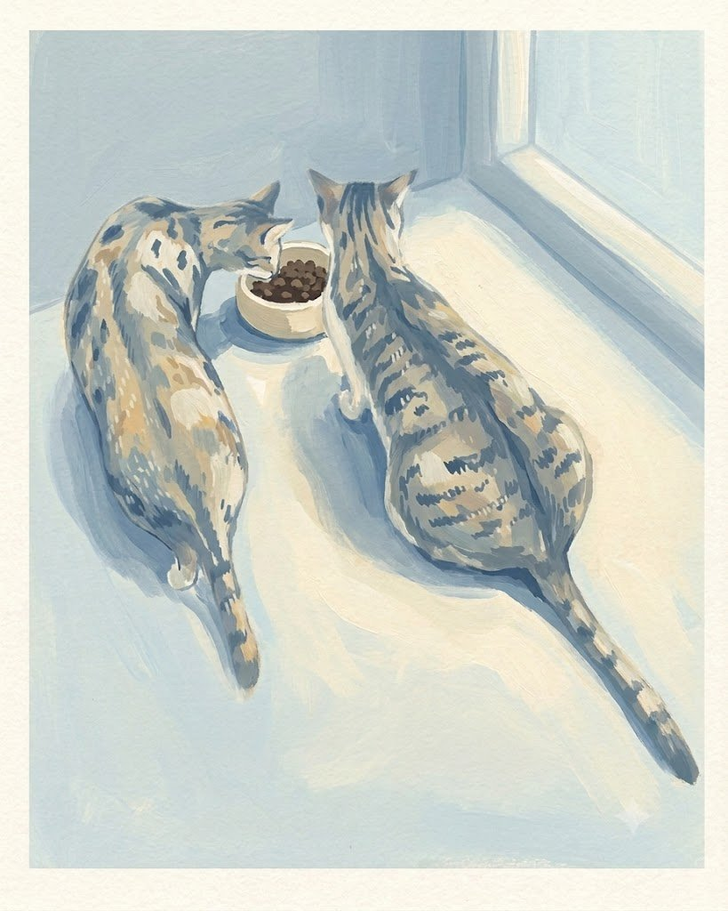
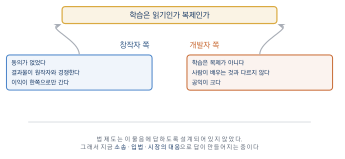
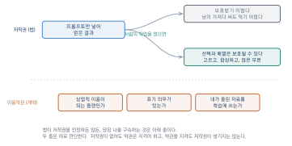
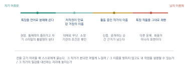

AI 윤리와 저작권

이 장을 마치면
- 생성형 AI의 학습 데이터를 둘러싼 쟁점을 양쪽 입장에서 설명할 수 있다.
- AI가 만든 결과물의 저작권이 어떻게 다루어지는지 안다.
- 특정 작가의 화풍을 흉내 내는 일의 법적·윤리적 경계를 판단할 수 있다.
- 딥페이크와 초상권 침해의 위험을 인식하고 피할 수 있다.
- 자기 작업에 적용할 실천 지침을 세울 수 있다.
이 장은 실습이 없는 대신 토론이 있다. 여기서 다루는 문제들은 정답이 정해져 있지 않고, 지금 이 순간에도 법정과 의회에서 다투어지고 있다. 그러나 답이 없다는 것이 아무래도 좋다는 뜻은 아니다. 창작을 업으로 삼으려는 사람이라면 최소한 무엇이 쟁점인지는 알고 자기 입장을 가지고 있어야 한다.
5.1 학습 데이터는 누구의 것인가
2.4절에서 지금의 인공지능이 인터넷에 쌓인 창작물을 재료로 삼았다고 했다. 이 사실이 지금 세계 곳곳의 법정에서 다투어지고 있다. 이 절은 어느 편을 들지 않는다. 대신 양쪽이 어떤 논리로 싸우는지를 정확히 전달한다. 논리를 알아야 이후에 나올 판결과 법 개정을 스스로 읽어 낼 수 있기 때문이다.
창작자 쪽의 주장
핵심은 세 가지다.
첫째, 동의가 없었다. 그림을 포트폴리오 사이트에 올린 일러스트레이터는 그것이 인공지능 학습에 쓰일 것을 알지 못했다. 인터넷에 공개했다는 사실이 모든 용도를 허락한 것은 아니다. 도서관에 책을 비치했다고 해서 누구든 복제해 팔아도 된다는 뜻이 아닌 것과 같다.
둘째, 결과물이 원작자와 경쟁한다. 이것이 가장 강한 논거다. 어떤 일러스트레이터의 그림으로 학습한 모델이 그와 비슷한 그림을 몇 초 만에 만들어 낸다면, 그 모델은 그의 일감을 직접 가져간다. 저작권법이 보호하려는 것이 결국 창작자의 경제적 기반이라면, 이보다 직접적인 침해를 상상하기 어렵다.
셋째, 이익이 한쪽으로만 간다. 재료를 제공한 사람은 아무것도 받지 못했고, 그 재료로 만든 도구는 소수의 기업에 막대한 수익을 안겼다.
개발자 쪽의 주장
이쪽 논리도 만만치 않다.
첫째, 학습은 복제가 아니다. 모델 안에 원본 그림이 저장되어 있는 것이 아니다. 2.2절에서 보았듯 남는 것은 가중치 숫자들이며, 그것은 수억 장의 이미지에서 추출된 통계적 경향이다. 저작권은 표현을 보호하지 경향을 보호하지 않는다.
둘째, 사람이 배우는 것과 다르지 않다. 미술을 배우는 학생은 수천 점의 명화를 보고 화풍을 익힌다. 그 학생이 나중에 비슷한 느낌의 그림을 그렸다고 저작권 침해라 하지 않는다. 기계가 같은 일을 더 빨리 했을 뿐인데 왜 다르게 취급하는가.
셋째, 공익이 크다. 이 기술을 막으면 의료·과학·교육 전반의 발전이 함께 늦춰진다.
두 주장이 부딪히는 지점은 결국 하나다. 학습이 읽기인가 복제인가. 읽기라면 허락이 필요 없고, 복제라면 필요하다. 법 제도는 이 물음에 답하도록 설계되어 있지 않았고, 그래서 지금 새로 만들어지고 있다.

그림 5.1에 양쪽 논거를 나란히 놓았다. 어느 쪽도 한 줄로 반박되지 않는다는 점을 확인해 두자. 이 사실이 이 문제가 아직 정리되지 않은 이유다.
어디까지 왔나
구체적 판결과 법령은 이 책이 인쇄된 뒤에도 계속 바뀔 것이므로, 큰 흐름만 짚어 둔다.
소송. 여러 나라에서 창작자 단체와 언론사가 인공지능 기업을 상대로 소송을 냈다. 쟁점은 대체로 두 갈래다. 학습 자체가 위법인가, 그리고 결과물이 원본과 비슷하게 나오는 경우(2.5절의 과적합)를 어떻게 볼 것인가. 후자는 창작자 쪽이 유리하다는 견해가 많다.
입법. 유럽연합은 인공지능 규제법을 통해 학습 데이터의 출처를 공개하도록 하는 방향으로 움직였다. 학습 자체를 금지하기보다 투명성과 거부권을 확보하는 쪽이 여러 나라의 대체적인 방향이다.
시장의 대응. 라이선스를 확보한 데이터만으로 학습한 모델이 등장했다. 표현의 폭은 좁을 수 있지만 상업적 이용에서 마음이 편하다는 장점이 있어, 광고·출판 업계에서 선호된다.
창작자가 지금 할 수 있는 것
법이 정리될 때까지 손 놓고 있을 필요는 없다. 실제로 쓸 수 있는 수단이 있다.
학습 거부 표시. 자기 사이트에 인공지능 수집기의 접근을 막는 설정을 두거나, 작품 페이지에 학습 이용을 거부한다는 표시를 남길 수 있다. 강제력에는 한계가 있지만, 나중에 다툴 때 의사를 밝혔다는 근거가 된다.
플랫폼 설정 확인. 작품을 올리는 플랫폼이 이용약관에서 학습 이용에 대해 무엇을 정하고 있는지 확인한다. 거부 설정을 제공하는 곳이 늘고 있다.
보호 도구. 이미지에 사람 눈에는 보이지 않는 교란을 넣어 학습을 방해하는 도구들이 연구되고 있다. 완전한 방어는 아니지만 선택지로 알아 둘 만하다.
이 절의 논의에서 자기 위치가 이중적이라는 점을 인식해 두자. 여러분은 도구를 쓰는 사람인 동시에 앞으로 작품을 만들어 올릴 사람이다. 지금은 학습 데이터를 쓰는 쪽에 서 있지만, 몇 년 뒤에는 자기 작품이 재료가 되는 쪽에 설 수 있다. 어느 한쪽 입장만으로 이 문제를 정리하기 어려운 이유가 여기 있다.
5.2 AI가 만든 것의 저작권
앞 절이 재료에 관한 문제였다면 이 절은 결과물에 관한 문제다. 내가 프롬프트를 넣어 만든 이미지는 내 것인가.
저작권은 인간의 창작을 보호한다
거의 모든 나라의 저작권법은 인간의 창작적 표현을 보호 대상으로 삼는다. 이 원칙에서 곧바로 따라 나오는 결론이 있다. 인간이 창작하지 않은 것은 저작권으로 보호되지 않는다.
이 원칙이 시험대에 오른 유명한 사례가 있다. 야생 원숭이가 사진가의 카메라를 만져 스스로 찍은 사진에 대해, 미국 법원은 사람이 찍지 않았으므로 저작권이 없다고 판단했다. 인공지능 생성물도 같은 틀에서 다루어진다.
미국 저작권청은 프롬프트만 입력해 얻은 결과물은 등록할 수 없다는 입장을 밝혀 왔다. 프롬프트는 주문에 가깝지 창작적 표현의 완성이 아니라는 논리다. 한국을 비롯한 여러 나라도 대체로 비슷한 방향이다.
이 말의 실질적 의미를 오해하지 말자. 저작권이 없다는 것은 내가 만든 이미지를 남이 가져다 써도 막기 어렵다는 뜻이다. 인공지능으로 만든 로고를 학과 상징으로 정했는데 다른 곳에서 똑같이 써도 문제 삼기 어려울 수 있다. 창작자에게 편한 이야기가 아니라 불리한 이야기다.
인간의 기여가 충분하다면
다만 문이 완전히 닫힌 것은 아니다. 각국 기관이 공통적으로 인정하는 여지는 인간의 기여가 충분한 부분이다.
인공지능으로 만든 이미지 여러 장을 골라 배치하고, 편집 도구로 합성하고, 색을 보정하고, 글자를 얹어 하나의 포스터를 완성했다면, 그 선택과 배열에는 사람의 창작이 들어 있다. 이 부분은 보호받을 수 있다는 것이 대체적인 견해다. 만화 형식의 저작물에 대해 개별 그림은 인정하지 않으면서 글과 그림의 배치·구성에는 저작권을 인정한 사례가 이 논리를 보여 준다.
실무 원칙이 여기서 나온다. 생성으로 끝내지 말고 반드시 사람의 작업을 얹는다. 7.6절에서 편집 도구로 마무리하라고 하는 이유는 품질 때문만이 아니라 권리 때문이기도 하다. 그리고 그 과정을 4.5절의 기록으로 남겨 두면 나중에 자기 기여를 증명할 근거가 된다.
이용약관이 실제로 정하는 것
법이 저작권을 인정하든 않든, 당장 여러분을 구속하는 것은 쓰고 있는 서비스의 이용약관이다.

그림 5.2의 두 줄을 섞어 생각하지 말자. 저작권이 인정되지 않아도 약관은 지켜야 하고, 약관을 잘 지켰다고 저작권이 생기지도 않는다. 아래 줄에서 확인할 것은 다음과 같다.
| 항목 | 확인할 내용 |
|---|---|
| 결과물의 권리 | 이용자에게 넘기는가, 회사가 갖는가, 공동인가 |
| 상업적 이용 | 무료 플랜에서도 가능한가. 유료 전환이 필요한가 |
| 표기 의무 | AI로 만들었음을 밝히도록 요구하는가 |
| 입력 자료의 이용 | 내가 올린 이미지·글을 학습에 쓰는가. 거부할 수 있는가 |
| 금지 용도 | 어떤 목적의 사용을 금지하는가 |
표 5.1에서 특히 두 번째 줄을 주의해야 한다. 무료 플랜의 결과물은 상업적 이용이 제한되는 경우가 많다. 과제로 만든 것을 나중에 상업적으로 쓰려다 문제가 되는 일이 실제로 생긴다.
네 번째 줄도 놓치기 쉽다. 참조용으로 올린 자기 그림이 그 서비스의 학습에 쓰일 수 있다. 5.1절에서 말한 창작자의 처지에 스스로를 놓는 셈이므로, 미공개 작업물을 올릴 때는 확인해 두는 편이 좋다.
프롬프트 자체의 저작권
4.5절에서 미뤄 둔 물음이다. 내가 공들여 만든 긴 프롬프트는 보호받는가.
짧은 문구는 어렵다는 것이 분명하다. 수채화풍 고양이에 권리를 인정할 수는 없다. 반면 수백 자에 걸쳐 구성과 조명과 제약을 정교하게 쓴 프롬프트라면 어문저작물로 볼 여지가 있다는 견해가 있으나, 이를 정면으로 확인한 판단은 아직 드물다.
실무적으로는 이렇게 정리해 두면 충분하다. 프롬프트는 법적 보호를 기대하기보다 영업 비밀처럼 다루는 편이 현실적이다. 공개하지 않을 것은 공개하지 않고, 팀 안에서는 공유하되 출처를 남긴다.
남의 프롬프트를 쓰는 것
반대 방향도 생각해 보자. 인터넷에 공유된 프롬프트를 가져다 쓰는 것은 대체로 문제가 되지 않는다. 공유한 사람이 그러라고 올린 것이기 때문이다.
다만 두 가지는 지키자. 첫째, 판매되는 프롬프트를 무단으로 재배포하지 않는다. 둘째, 남의 프롬프트를 거의 그대로 써서 만든 결과물을 온전히 내가 설계했다고 말하지 않는다. 이것은 법의 문제라기보다 13.6절에서 다룰 크레딧 표기의 문제다.
5.3 화풍을 흉내 내는 일
프롬프트에 작가 이름을 넣으면 그 사람의 화풍이 상당히 재현된다. 이것은 이 도구의 가장 강력한 기능이면서 가장 논란이 큰 지점이다.
법은 화풍을 보호하지 않는다
먼저 법적 사실부터. 화풍 자체는 저작권의 보호 대상이 아니다. 저작권은 구체적인 표현을 보호하지 양식을 보호하지 않는다. 점묘법이나 입체주의에 권리를 인정한다면 미술사는 존재할 수 없었을 것이다.
그러니 어떤 작가처럼 그리는 것 자체는 위법이 아니다. 사람이 손으로 그러는 것도, 기계가 그러는 것도 마찬가지다.
그런데도 왜 문제인가
법적으로 문제가 없다면 왜 이렇게 반발이 클까. 세 가지 이유가 겹친다.
첫째, 속도와 규모가 다르다. 어떤 작가의 화풍을 손으로 익히려면 몇 년이 걸리고, 그 과정에서 흉내는 자기 것으로 변형된다. 기계는 몇 초 만에, 무한히, 변형 없이 해낸다. 같은 행위라도 규모가 백만 배가 되면 성질이 달라진다는 것이 창작자 쪽의 주장이다.
둘째, 그 화풍으로 학습했다는 사실이 있다. 5.1절의 문제와 얽힌다. 사람이 도판을 보고 배우는 것과 달리, 모델은 그 작가의 작품을 대량으로 입력받아 만들어졌다. 당신 그림으로 만든 도구가 당신 그림을 대신 그린다는 구도가 성립한다.
셋째, 생계가 걸린다. 작가의 화풍은 곧 그의 시장이다. 의뢰인이 그 화풍의 그림을 몇 초 만에 얻을 수 있다면 의뢰는 사라진다.
살아 있는 작가와 세상을 떠난 작가
실천적으로는 이 구분이 가장 유용하다.
저작권이 만료된 거장의 이름을 쓰는 것은 문제가 거의 없다. 반 고흐, 클림트, 호쿠사이의 화풍으로 그리는 것은 미술 교육에서도 오랫동안 해 온 일이다. 다만 특정 작품을 거의 그대로 재현하는 것은 다른 문제이며, 소장 기관이 이미지 사용에 조건을 걸어 두었을 수 있다.
활동 중인 작가의 이름은 신중해야 한다. 법적으로 다투기 어렵더라도, 퍼블리시티권right of publicity––이름과 초상이 갖는 재산적 가치에 대한 권리––가 문제될 수 있고, 무엇보다 같은 분야에서 일하려는 사람으로서의 신용이 걸린다. 여러 서비스가 생존 작가 이름을 프롬프트에서 걸러 내기 시작한 것도 이 때문이다.
학생 작업이라도 마음을 놓을 수 없다. 공모전 출품작이나 SNS에 공개한 작업에 OOO 작가풍이라고 밝혀 두면, 그것이 그대로 문제 제기의 근거가 된다. 과제로만 쓰고 공개하지 않는 경우와 공개하는 경우를 구분해서 다루자.
이름 대신 특징을 쓴다
가장 실용적인 해법은 작가 이름을 그 화풍의 특징으로 풀어 쓰는 것이다. 놀랍게도 결과가 더 좋은 경우가 많다. 이름은 모델이 무엇을 떠올릴지 통제할 수 없지만, 특징은 통제할 수 있기 때문이다.
in the style of [활동 중인 일러스트레이터 이름]flat vector illustration, limited palette of four muted colors,
thick uniform outlines, simplified geometric shapes,
generous negative space, slightly off-register print texture,
characters with small dot eyes and no mouth이렇게 쓰면 세 가지가 좋아진다. 특정인의 이름에 기대지 않으므로 윤리적 부담이 없고, 요소를 하나씩 조절할 수 있으므로 통제력이 올라가며, 그 조합이 곧 자기 스타일의 출발점이 된다.
남의 이름을 프롬프트에 적는 동안에는 자기 화풍이 생기지 않는다. 특징을 언어로 분해하는 훈련이 결국 자기만의 조합을 찾는 길이다. 4장 실습 4-6에서 어휘 목록을 만들라고 한 것이 여기로 이어진다.
그렇다면 어디까지 참고해도 되는가

그림 5.3처럼 이 문제는 되고 안 되고가 아니라 정도의 문제다. 왼쪽으로 갈수록 자기 어휘가 쌓이고 오른쪽으로 갈수록 남의 이름에 기댄다. 명확한 선은 없지만, 스스로에게 물어볼 만한 기준은 있다.
- 이 결과물을 그 작가가 본다면 어떻게 느낄까?
- 내 작업을 소개할 때 그 작가의 이름을 밝히지 않고도 설명할 수 있는가?
- 이 결과물이 그 작가의 일감을 대신하는 자리에 놓이는가?
세 번째가 가장 중요하다. 공부를 위해 화풍을 분석하는 것과, 그 작가에게 갔을 의뢰를 대신 받는 것은 전혀 다른 일이다.
5.4 딥페이크와 초상권
이 절은 다른 절과 성격이 다르다. 앞의 논의들이 정답이 정해지지 않은 문제였다면, 여기서 다루는 것은 형사 처벌로 이어질 수 있는 명확한 선이다. 11장에서 영상과 아바타를 다루기 전에 반드시 읽어야 한다.
무엇이 문제인가
인공지능으로 실존 인물의 얼굴이나 목소리를 만들어 내는 것을 흔히 딥페이크deepfake라고 부른다. 기술 자체가 불법인 것은 아니다. 영화의 젊은 시절 재현, 고인이 된 배우의 복원, 다국어 더빙처럼 정당한 쓰임이 있다.
문제는 동의 없이, 그리고 그 사람이 하지 않은 말과 행동을 만들어 낼 때 생긴다.
한국에서 처벌될 수 있는 행위
한국 법에서 관련되는 조항은 여러 갈래다. 세부 조문과 형량은 개정되므로 최신 내용을 확인해야 하지만, 어떤 행위가 걸리는지는 알아 두어야 한다.
| 행위 | 문제되는 지점 |
|---|---|
| 성적 내용으로 합성해 제작·유포 | 성폭력처벌법상 허위영상물 범죄. 제작만으로도 처벌 대상이며 처벌이 무겁다 |
| 사실이 아닌 내용을 사실처럼 유포 | 명예훼손. 허위 사실이면 가중된다 |
| 동의 없이 얼굴·목소리를 이용 | 초상권·음성권 침해, 인격권 침해로 인한 손해배상 |
| 유명인의 얼굴로 광고·홍보 | 퍼블리시티권 침해 |
| 선거 관련 인물의 합성물 유포 | 공직선거법 제한. 시기에 따라 금지 범위가 넓다 |
표 5.2에서 첫 줄을 특히 강조한다. 유포하지 않고 만들기만 해도 처벌될 수 있고, 상대가 성인이든 미성년자든 예외가 없으며, 장난이었다는 항변은 통하지 않는다. 실제로 학생 간 사건으로 형사 처벌을 받은 사례가 이어지고 있다.
친구 얼굴로 하는 장난이 가장 흔한 사고 경로다. 재미로 만들어 단체 대화방에 올린 것이 유포가 되고, 그 대화방을 벗어나는 순간 통제할 수 없게 된다. 만든 사람뿐 아니라 옮긴 사람도 책임을 진다. 친한 사이라 괜찮다는 판단은 본인이 내릴 수 있는 것이 아니다.
풍자와 패러디는 어디까지
정치인이나 공적 인물을 소재로 한 풍자는 표현의 자유로 보호되는 영역이 있다. 그러나 인공지능 합성물에서는 경계가 훨씬 좁아진다. 이유는 진짜처럼 보이기 때문이다.
만평이나 캐리커처는 누가 봐도 창작물임을 알 수 있다. 반면 사실적으로 합성된 영상은 보는 사람이 진짜로 오인할 수 있고, 그 순간 풍자가 아니라 허위 사실 유포가 된다.
실무적 기준은 이렇다.
- 합성물임이 명확히 드러나게 한다. 화면에 표시하거나, 사실적이지 않은 양식으로 만든다.
- 하지 않은 말을 하게 만들지 않는다. 특히 인용문 형태를 피한다.
- 사적인 개인은 소재로 삼지 않는다. 공적 인물의 공적 활동에 한정한다.
그렇다면 무엇으로 실습하는가
11장에서 인물이 등장하는 영상과 립싱크를 다룬다. 안전하게 실습할 수 있는 소재는 다음과 같다.
본인 얼굴. 가장 확실하다. 자기 사진과 목소리는 자기 것이다. 다만 만든 결과물을 공개할 때는 나중에 어떻게 쓰일지 생각해 두자.
생성된 가상 인물. 이미지 생성으로 만든, 실존하지 않는 얼굴을 쓴다. 이 책의 실습은 기본적으로 이 방식을 권한다. 다만 우연히 실존 인물과 닮을 수 있으므로, 공개 전에 이미지 역검색으로 확인하는 습관을 들이면 좋다.
명시적 동의를 받은 사람. 팀원끼리 서로 얼굴을 쓰기로 했다면, 무엇을 만들지와 어디에 공개할지를 구체적으로 정해 두고 받는다. 써도 돼라는 구두 동의는 범위가 불분명해 나중에 분쟁이 된다.
정리하면 하나다. 실존 인물의 얼굴과 목소리는 본인 것이거나 명시적 동의를 받은 것만 쓴다. 이 원칙에는 예외를 두지 않는 편이 안전하다.
내가 피해자가 된다면
반대의 경우도 알아 두자. 자기 얼굴이 합성물에 쓰인 것을 발견했다면 다음 순서로 대응한다.
- 증거를 남긴다. URL, 화면 캡처, 게시 시각, 게시자 정보를 기록한다. 지워지기 전에 확보하는 것이 중요하다.
- 플랫폼에 신고한다. 대부분의 서비스가 이런 신고에 대한 별도 창구를 두고 있다.
- 전문 기관에 연락한다. 디지털성범죄피해자지원센터, 방송통신심의위원회, 경찰 사이버수사대가 삭제 지원과 수사를 담당한다.
- 혼자 해결하려 하지 않는다. 특히 미성년자이거나 협박이 동반된 경우, 즉시 주변 어른이나 기관에 알린다.
부록 C에 관련 창구를 정리해 두었다.
5.5 편향, 그리고 만들지 않을 자유
2.5절에서 편향이 왜 생기는지 보았다. 여기서는 그것이 작품에 실려 세상에 나갈 때 무슨 일이 벌어지는지를 다룬다.
무심코 강화하는 것들
편향이 문제가 되는 순간은 대개 악의가 있을 때가 아니라 생각하지 않았을 때다.
학과 홍보물을 만들며 공부하는 학생을 생성했더니 전부 비슷한 나이와 외모의 사람이 나왔고, 그대로 게시했다고 하자. 그 홍보물을 본 늦게 진학한 학생, 장애가 있는 학생, 외국인 학생은 자기 자리가 없다고 느낀다. 만든 사람은 아무 의도가 없었지만 결과는 남는다.
문제는 이런 이미지가 다시 인터넷에 쌓인다는 점이다. 편향된 데이터로 학습한 모델이 편향된 이미지를 만들고, 그것이 다시 학습 데이터가 된다. 되먹임이 일어난다.
빠진 것을 보는 눈
1.4절에서 안목을 기르는 세 가지 습관을 말했다. 여기에 하나를 더한다. 화면에 나온 것이 아니라 나오지 않은 것을 본다.
작업물을 내보내기 전에 물어볼 질문들이다.
- 이 결과물에 등장하는 사람들은 누구를 대표하는가? 누가 빠졌는가?
- 특정 역할에 특정 유형만 반복해서 등장하지 않는가?
- 이것을 볼 사람 중에 나는 여기 없구나라고 느낄 사람이 있는가?
이것은 정치적으로 올바르기 위한 절차가 아니다. 작업의 도달 범위를 넓히는 실무적 판단이다. 홍보물이 특정 집단만 겨냥한 것처럼 보이면 나머지에게 닿지 않는다.
문화적 요소를 가져다 쓸 때
전통 문양, 종교적 상징, 특정 지역의 복식과 건축을 소재로 쓰는 일이 잦다. 인공지능은 이런 요소를 아무 맥락 없이 섞어 낸다. 여러 문화의 요소가 뒤죽박죽 결합된 결과물이 나오는 일이 흔하다.
여기에는 두 가지 위험이 있다. 하나는 부정확이다. 종교적 의미가 있는 문양이 장식으로 쓰이거나, 특정 신분만 착용하던 복식이 아무에게나 입혀진다. 다른 하나는 납작해짐이다. 복잡한 문화가 몇 가지 시각적 클리셰로 요약되어 유통된다.
자기 문화가 아닌 요소를 쓸 때는 최소한 그것이 무엇인지 확인하고 쓰자. 인공지능에게 물어보는 것으로는 부족하다. 3.1절에서 본 환각이 이 영역에서 특히 자주 나타난다. 실제 자료나 그 문화권 사람의 확인을 거치는 편이 안전하다.
만들지 않기로 하는 것
1.4절 끝에서 짧게 언급한 이야기를 여기서 제대로 다룬다.
기술적으로 가능한 것과 만들어도 되는 것은 다르다. 그리고 무엇을 만들지 않을지 정하는 것은 창작자의 능력을 제한하는 일이 아니라 창작자를 규정하는 일이다.
실제로 결정해야 할 상황들이 있다.
- 실제 사건의 피해자를 소재로 한 이미지를 만들어 달라는 의뢰
- 자기 화풍을 재현당한 작가가 항의하는 상황에서 그 작업을 계속할지
- 사실이 아닌 장면을 사실처럼 보이게 만들어 달라는 요구
- 저임금 노동을 대체할 목적으로 대량 생성을 맡는 일
이런 상황에서 내가 안 하면 다른 사람이 한다는 말이 나온다. 사실일 것이다. 그러나 그것이 자기 판단을 대신할 이유는 되지 못한다.
도구는 무엇을 만들 수 있는지 알려 주지만, 무엇을 만들어야 하는지는 알려 주지 않는다.
학생으로서 지금 정해 둘 것
거창한 선언은 필요 없다. 다만 학기가 끝날 때까지 다음 세 가지에 대한 자기 답은 갖고 있는 편이 좋다. 13장 발표에서 이 답이 실제로 필요해진다.
- 나는 어떤 소재를 인공지능으로 다루지 않겠는가?
- 나는 내 작업에 인공지능을 썼다는 사실을 어떤 방식으로 밝히겠는가?
- 누군가 내 작업을 보고 이건 AI가 만든 거잖아라고 할 때, 나는 무엇을 근거로 내 작업이라 말하겠는가?
세 번째 질문에 답하려면 결국 2번의 기록과, 자기가 실제로 한 판단과 수정이 있어야 한다. 5.2절에서 생성으로 끝내지 말라고 한 이야기가 여기서 다시 만난다.
5.6 창작자를 위한 실천 지침
앞의 다섯 절을 실제로 쓸 수 있는 형태로 정리한다. 이 절의 내용은 부록 C의 체크리스트로 다시 압축되어 있으니, 작업할 때는 그쪽을 옆에 두면 된다.
도구를 고를 때
학습 데이터의 출처가 밝혀진 도구를 우선 고려한다. 특히 상업적으로 쓸 작업이라면 그렇다. 라이선스를 확보한 데이터로 학습했다고 밝힌 서비스들이 있고, 이런 곳은 대체로 결과물에 대한 면책 조항도 함께 둔다.
이용약관의 다섯 항목을 확인한다. 표 5.1의 항목들이다. 처음 가입할 때 한 번만 보면 되고, 부록 A의 비교표에 정리해 두었다.
무료 플랜의 상업 이용 제한을 특히 확인한다. 학기 과제로 만든 것을 나중에 포트폴리오나 실제 업무에 쓰려다 막히는 일이 가장 흔하다.
작업할 때
작가 이름 대신 특징을 쓴다. 5.3절의 방식이다. 윤리적 부담이 줄고 통제력이 올라간다.
실존 인물의 얼굴과 목소리는 쓰지 않는다. 본인 것이거나 명시적 동의를 받은 것만 쓴다. 5.4절의 원칙에 예외를 두지 않는다.
결과가 특정 작품과 닮았다는 느낌이 들면 확인한다. 2.5절에서 말한 과적합의 흔적일 수 있다. 이미지 역검색으로 원본이 있는지 본다.
생성으로 끝내지 않는다. 고르고, 자르고, 합치고, 보정하고, 글자를 얹는 사람의 작업을 반드시 얹는다. 품질을 위해서이기도 하고 권리를 위해서이기도 하다.
과정을 기록한다. 4.5절의 양식이다. 나중에 자기 기여를 설명할 유일한 근거다.
공개할 때
AI 사용 사실을 밝힌다. 어떻게 밝힐지는 상황에 따라 다르지만, 다음 정도가 무난하다.
[간단한 형태]
일부 이미지는 생성형 AI 도구로 제작하였습니다.
[구체적인 형태]
이미지 생성: Adobe Firefly / 편집·합성: Photopea
텍스트 초안: Claude (최종 원고는 저자가 작성·수정)
[작업 과정을 밝히는 형태]
콘셉트 스케치를 직접 그린 뒤 AI로 변주하여 32장을 생성,
그중 6장을 선별해 합성하고 색보정하였습니다.세 번째 형태를 권한다. 감추는 것보다 낫고, 무엇보다 자기가 실제로 한 일이 드러난다. 13.5절에서 이것이 포트폴리오의 강점이 되는 이유를 다룬다.
표기를 자백처럼 여길 필요가 없다. 사진가가 어떤 카메라와 렌즈를 썼는지 밝히는 것과 다르지 않다. 오히려 밝히지 않았다가 나중에 드러나는 쪽이 신뢰를 크게 잃는다.
공모전과 과제의 규정을 먼저 확인한다. 인공지능 사용을 금지하는 곳, 밝히면 허용하는 곳, 별도 부문을 둔 곳이 모두 있다. 규정을 어긴 수상은 취소된다.
편향을 점검한다. 5.5절의 세 질문을 내보내기 전에 던진다.
한 장으로 요약하면
□ 이 도구의 약관에서 상업적 이용이 허용되는가
□ 작가 이름을 프롬프트에 넣지 않았는가
□ 실존 인물의 얼굴·목소리가 들어 있지 않은가
□ 특정 작품과 지나치게 닮지 않았는가 (역검색 확인)
□ 상표·로고·저작물이 화면에 들어 있지 않은가
□ 사람의 작업(선택·편집·보정)이 실제로 들어갔는가
□ 등장 인물의 구성에 치우침이 없는가
□ AI 사용 사실을 어떤 형태로든 밝혔는가
□ 제출처의 규정을 확인했는가아홉 항목이다. 처음에는 하나씩 확인하겠지만 몇 번 반복하면 몸에 붙는다. 부록 C에 각 항목의 확인 방법을 자세히 실었다.
모르면 하지 않는다
마지막으로 한 가지. 이 장을 읽고 나서도 판단이 서지 않는 상황을 만날 것이다. 법과 관행이 아직 정리되지 않았으니 당연하다.
그럴 때의 원칙은 단순하다. 확신이 없으면 공개하지 않거나, 확인한 뒤에 한다. 만드는 것은 언제든 다시 할 수 있지만, 한번 공개된 것은 되돌릴 수 없다. 특히 5.4절의 영역에서는 이 원칙을 예외 없이 지키기 바란다.
이 장의 실습은 만드는 것이 아니라 조사하고 토론하는 활동이다. 수업의 3주차 토론 시간에 대응한다.
실습 5-1. 내 도구의 약관 읽기
자기가 쓰는 도구 중 두 개를 골라 이용약관을 직접 찾아 읽고, 표 5.1의 다섯 항목을 채운다. 찾을 수 없는 항목은 명시 없음이라고 적는다.
서비스: ____________________ 확인 날짜: ____________
약관 주소: ______________________________________
1. 결과물의 권리 : ______________________________
2. 상업적 이용 : □ 무료도 가능 □ 유료만 □ 불명확
3. 표기 의무 : □ 있음 □ 없음 내용: ____________
4. 입력 자료의 학습 이용: □ 함 □ 안 함 □ 거부 가능
5. 금지 용도 : ______________________________
한 줄 결론: 이 도구로 만든 것을 상업적으로 써도 되는가? ______두 서비스의 결과를 비교하고, 어느 쪽이 더 안심하고 쓸 수 있는지 근거와 함께 정리한다.
실습 5-2. 화풍을 언어로 분해하기
좋아하는 활동 중인 작가를 한 명 고른다. 그 작가의 이름을 쓰지 않고, 화풍의 특징만으로 프롬프트를 만든다.
작가(제출물에는 적지 않는다): ____________
선·윤곽: ____________________________________
색 사용: ____________________________________
질감·매체: ____________________________________
구도 습관: ____________________________________
인물 표현: ____________________________________
분위기: ____________________________________
완성 프롬프트(영어):
______________________________________________
______________________________________________만든 프롬프트로 이미지를 생성해 보고, 다음을 판단한다.
- 원래 작가의 느낌에 얼마나 가까운가?
- 가깝지 않다면 어느 항목의 묘사가 부족했는가?
- 이 프롬프트에서 두세 항목만 바꾸면 원작가와 뚜렷이 구별되면서도 내 취향에 맞는 조합이 되는가? 실제로 바꿔 만들어 본다.
3번의 결과가 자기 스타일 탐색의 출발점이다.
실습 5-3. 쟁점 토론
조를 나누어 다음 중 하나를 맡아 토론한다. 자기 실제 입장과 반대편을 맡는 것을 권한다. 상대 논리를 이해해야 자기 입장도 단단해진다.
- 인공지능 학습에 저작물을 쓰는 것은 허락받아야 하는가?
- 프롬프트만 넣어 만든 이미지에 저작권을 인정해야 하는가?
- 생존 작가의 이름을 프롬프트에 쓰는 것을 서비스가 막아야 하는가?
- 공모전에서 인공지능 사용을 금지하는 것은 타당한가?
준비물은 다음 세 가지다.
- 자기 입장 한 문장
- 근거 세 가지 (하나는 반드시 실제 사례나 조사한 자료에서)
- 상대편이 낼 가장 강한 반론과 그에 대한 답
실습 5-4. 표기 문구 만들기
지금까지 만든 작업물 중 하나를 골라, 5.6절의 세 가지 형태로 각각 표기 문구를 작성한다. 그중 어느 것을 쓸지 고르고 이유를 적는다.
작업물: ____________________
[간단한 형태]
______________________________________________
[구체적인 형태]
______________________________________________
[과정을 밝히는 형태]
______________________________________________
______________________________________________
고른 형태: ______ 이유: ______________________실습 5-5. 나의 선 정하기
5.5절 끝의 세 질문에 대한 자기 답을 작성한다. 이 문서는 학기말까지 보관하고, 13장 발표에서 다시 꺼내 그동안 생각이 바뀌었는지 확인한다.
- 나는 어떤 소재를 인공지능으로 다루지 않겠는가? (최소 두 가지, 각각 이유 포함)
- 나는 AI 사용 사실을 어떤 방식으로 밝히겠는가?
- 누군가 이건 AI가 만든 거잖아라고 할 때, 나는 무엇을 근거로 내 작업이라 말하겠는가?
5장 요약
- 학습 데이터 논쟁의 핵심은 하나다. 학습이 읽기인가 복제인가. 창작자 쪽은 동의 부재·시장 경쟁·이익의 편중을, 개발자 쪽은 학습이 복제가 아님·사람의 학습과 유사함·공익을 든다. 법 제도는 이 물음에 답하도록 설계되지 않았고 지금 새로 만들어지고 있다.
- 창작자가 지금 쓸 수 있는 수단은 학습 거부 표시, 플랫폼 설정 확인, 보호 도구다. 완전하지 않지만 의사를 밝혀 두는 것 자체가 근거가 된다.
- 저작권은 인간의 창작적 표현을 보호한다. 프롬프트만 넣어 얻은 결과물은 등록이 어렵다는 것이 여러 나라의 현재 입장이며, 이는 남이 가져다 써도 막기 어렵다는 뜻이므로 창작자에게 불리하다.
- 다만 선택과 배열에는 사람의 창작이 있다. 그래서 실무 원칙은 생성으로 끝내지 말고 사람의 작업을 얹는 것이며, 그 과정을 기록해 두는 것이다.
- 당장 나를 구속하는 것은 법이 아니라 이용약관이다. 결과물의 권리, 상업적 이용, 표기 의무, 입력 자료의 학습 이용, 금지 용도 다섯 항목을 확인한다. 무료 플랜은 상업 이용이 제한되는 경우가 많다.
- 화풍 자체는 저작권 보호 대상이 아니다. 그럼에도 생존 작가 이름을 쓰는 것이 문제되는 이유는 속도와 규모, 그 작가의 작품으로 학습했다는 사실, 그리고 생계가 걸린다는 점이다.
- 해법은 이름 대신 특징을 쓰는 것이다. 윤리적 부담이 없고, 통제력이 올라가며, 그 조합이 자기 스타일의 출발점이 된다. 남의 이름을 적는 동안에는 자기 화풍이 생기지 않는다.
- 딥페이크deepfake는 정답이 없는 문제가 아니라 형사 처벌로 이어질 수 있는 명확한 선이다. 성적 합성물은 제작만으로도 처벌 대상이며, 친구 얼굴로 하는 장난이 가장 흔한 사고 경로다.
- 실습은 본인 얼굴, 생성된 가상 인물, 명시적 동의를 받은 사람으로만 한다. 피해자가 되었다면 증거 확보 → 플랫폼 신고 → 전문 기관 연락 순으로 대응하고 혼자 해결하려 하지 않는다.
- 편향은 악의가 아니라 생각하지 않았을 때 실린다. 화면에 나온 것이 아니라 나오지 않은 것을 보는 눈이 필요하며, 이는 올바름의 문제이기 전에 작업의 도달 범위를 넓히는 실무적 판단이다.
- 기술적으로 가능한 것과 만들어도 되는 것은 다르다. 무엇을 만들지 않을지 정하는 것은 창작자를 제한하는 일이 아니라 규정하는 일이다.
- 공개할 때는 AI 사용 사실을 밝힌다. 과정을 드러내는 형태가 가장 좋다. 감추는 것보다 낫고, 자기가 실제로 한 일이 드러나기 때문이다. 확신이 없으면 공개하지 않거나 확인한 뒤에 한다.
5장 연습문제
- ★ 학습 데이터 논쟁에서 창작자 쪽 주장 세 가지와 개발자 쪽 주장 세 가지를 각각 한 문장씩 정리하시오.
- ★ 프롬프트만 입력해 만든 이미지에 저작권이 인정되기 어려운 이유를 설명하고, 그것이 창작자에게 불리한 이유를 쓰시오.
- ★ 다음 중 이용약관에서 반드시 확인해야 할 항목이 아닌 것은?
- 생성물의 상업적 이용 가능 여부
- 내가 올린 이미지를 학습에 쓰는지 여부
- 서비스의 월간 이용자 수
- AI 사용 사실 표기 의무
- ★★ 화풍은 저작권 보호 대상이 아니다라는 법 원칙이 있는데도 생존 작가 이름을 프롬프트에 쓰는 것이 문제되는 이유를 세 가지 들어 설명하시오.
- ★★ 다음 프롬프트를 5.3절의 방식에 따라 고쳐 쓰시오. 최소 다섯 개의 특징 항목을 포함할 것.
in the style of [활동 중인 일러스트레이터], a girl in a garden - ★★ 다음 각 상황이 법적으로 문제될 수 있는지 판단하고, 문제된다면 어떤 점이 문제인지 쓰시오.
- 친구 사진으로 우스운 영상을 만들어 단체 대화방에만 올렸다
- 세상을 떠난 화가의 화풍으로 그림을 그려 SNS에 올렸다
- 유명 배우의 얼굴로 가상의 화장품 광고 이미지를 만들어 과제로 제출했다
- 생성된 가상 인물의 얼굴로 학과 홍보 영상을 만들었다
- ★★ 5.6절의 점검 목록 아홉 항목 중 자기 최근 작업물에 적용했을 때 통과하지 못하는 항목을 찾고, 어떻게 보완할지 쓰시오. 모두 통과한다면 어느 항목이 가장 확인하기 어려웠는지 쓰시오.
- ★★★ 다음 상황에서 자신이라면 어떻게 하겠는지, 5장에서 배운 개념을 근거로 서술하시오.
“졸업 작품으로 만든 일러스트 연작이 호평을 받아 굿즈로 제작하자는 제안을 받았다. 그런데 이 작업에는 무료 플랜으로 생성한 이미지가 다수 포함되어 있고, 프롬프트에는 좋아하는 현역 작가의 이름이 들어가 있다.”
- ★★★ AI 사용 사실을 밝히는 것이 약점을 드러내는 일이 아니라 오히려 강점이 될 수 있는 이유를 서술하시오. 답에는 5.2절의 저작권 논의와 13장의 포트폴리오 관점이 모두 반영되어야 한다.
- ★★★ 자신이 앞으로 창작자로 활동하며 인공지능으로 만들지 않기로 하는 것을 두 가지 정하고, 각각에 대해 (1) 왜 그렇게 정했는지, (2) 그 결정으로 잃게 되는 것은 무엇인지, (3) 그럼에도 그렇게 정하는 이유를 서술하시오.